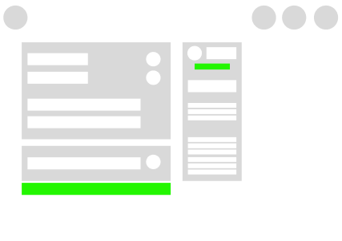
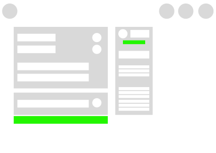
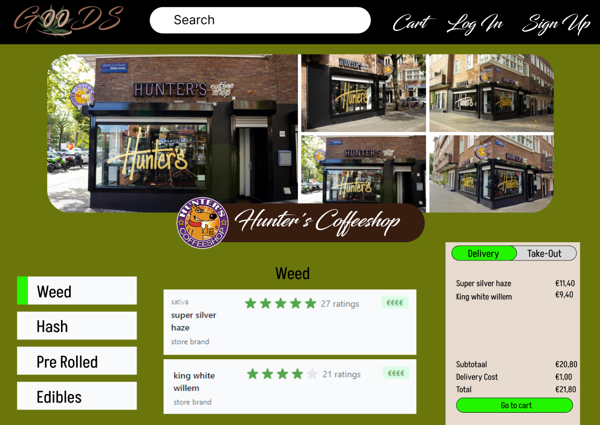
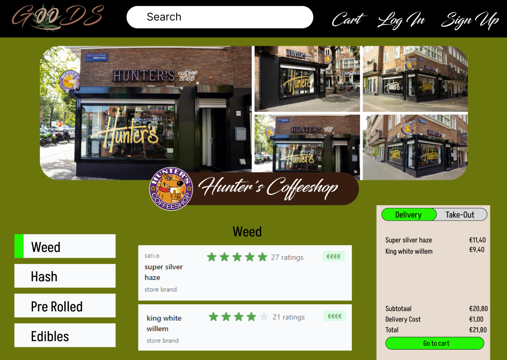

Project Organisation
Planning and Agreements with other teammates
For a given assignment, our team creates a detailed plan with defined milestones and quality expectations. Through this documentation I make it evident for my teachers where I've partaken.
PROOF: Team Charter and Wireframes
Our team charter outlines rules for communication, task completion, and penalties for rule violations, in which I partook. I worked on the 1st prototypes for the website, as well as on a later date refined the Figma. MoSCoW and Wireframes


Through doing physical pitches for the website and adding the most important elements using the MoSCoW method (we as a team did), I created half of the website's layout, starting with the first version based on further research I later did and displayed in Figma.
After creating some Figma pitches me and another teammate split the website and each did the wireframe for it in Figma.
 

To enchance the theme of the website being for cannabis, which matter I tried to persue professionaly I looked at green and brown wesbites to strenghten the idea (as well as other websites with a similar theme).
PROOF - understanding of the 60 30 10 rule, and improving layout
I redesinged the previous layout that other teammates did, based on the given feedback and reflection we had.


Starting with the About page I changed the colors, ensured text with this font I picked would work both in readability and suitability of the webpage. From the given feedback I tried to hoan in on the idea of our website being for "lazy ustomers" and that's why i focused on bringin this feeling through custom elements such as the receipt or refined logo.
 

Reflection
Looking back, we recognize the need for stricter adherence to our rules and better structure in our penalties...
Communication & Reporting
You take the direct stakeholder into account when working on an assignment. You pay attention to what you want to communicate, and in which shape you do this. You are aware of bias and the consequences bias could have.
Realizing my mistakes & making a change
Last week, I discussed progress with my semester coach, focusing on...


Feedback from Petra and Chris was greatly needed for me to pick the pace up


These discussions reinforced my documentation practices as the ammount of advice and support I've gathered from these feedbacks has become eye opening. I believe these talks have brought me back on pace.
Exploratory Research
You explore and ask questions throughout the solution process.
PROOF - Making of Learning Outcomes Page
PROOF - Implementing a variation fo slideshow with JS
PROOF - Taking Loadies design idea on the group website, refining it
Feedback and Reflection
Continuous feedback loop helping prove my progress...
PROOF - Reflection
I started with the right approach. I however got side-tracked at a point. I was getting too focused on the ideal structure of the website to the point that all, I was doing for 2 weeks was adjusting the Figma pitch and getting feedback on it.


PROOF - Taking responsibility and reaching for feedback.

PROOF - Wireframes Design


Core Values
You identify your own core values. You make considered choices for your development and your study program.
PROOF - Teammate Opinions
We had a task about persevierance and the whole meaning of Core Values as a requirement. Through this exersise I rated myself and others. We each got our moments of reflection on our strong and weak sides.

Each sticky paper has my traits written down based on my opinions about where I'm wrong and right